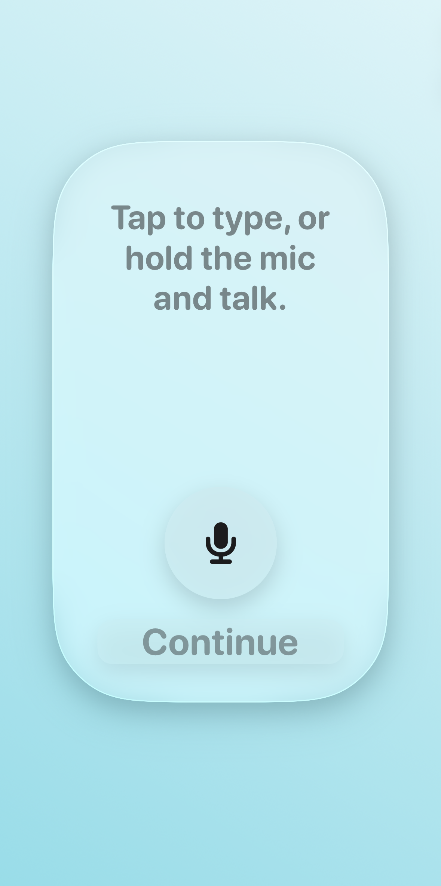
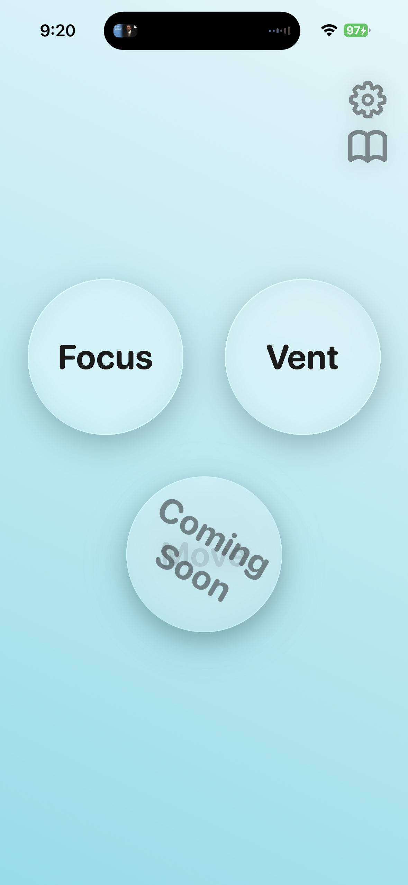

How Pivot helps you scroll less
Focus, Vent, and Move work together to turn screen time into simple offline action.
Focus
Focus helps you commit to one offline task and track your attention with your phone face down.
- Tap Accept on an offline task.
- Put your phone face down to count time only while screens are down.
- When time ends, add the session to your Journal.
Task categories include tactile thinking, spatial organization, analog consumption, and kinesthetic resets.
Vent
Vent gives you a private space to type or talk through what’s on your mind, then optionally generate a short reflection.
- Tap to type, or hold the mic and talk (transcript fills in automatically).
- During processing, you can see an AI Analysis screen (when available).
- Review your reflection and add it to your Journal.
Move
Move turns walking into a gentle goal-based ritual. Start a journey, reach the goal marker, then reflect.
- Start a journey to find a reachable destination near you.
- Walk to the goal marker. If you’re not close, you’ll get a prompt.
- When you arrive, capture a photo and write a short reflection.
Designed for real life, not endless feeds
- Focus counts screen-down time (not just device usage).
- Vent supports typing or mic talk.
- Move uses location to set and confirm your destination marker.
Why this behavior loop works
Pivot combines planning, expression, and movement into one repeatable reset you can actually sustain.
In-app previews
A quick look at Focus, Vent, and the current Move beta experience.



FAQ
How each mode works.
Start your offline reset today
Download Pivot and begin with one small action you can complete right now.